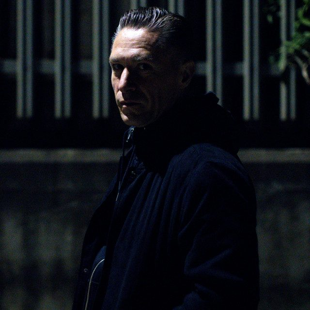

Jon Rundell [Audio]: Offsider to the Cox


STREAMING AUDIO INTERVIEW
There was something about UK DJ/producer Jon Rundell that obviously caught the attention of Carl Cox. While he’s been immersed in dance music since the mid 90s, pushing a sound that spans smoothly across house, techno, breaks and pumping progressive, it was in 2006 that his career was taken to the next level when was signed up by Carl Cox to take the reigns of Intec Records on his behalf. With his eclectic approach to dance music, Rundell succeeded in taking the label in new directions and was also given the opportunity to push his own productions out to a wider audience.
It’s clear this is a professional relationship that is taking him places. But you’d be a fool to write Rundell off as a superstar-DJ lackey. It’s as a producer in particular that things have gone absolutely wild for him in the last 12 months: his remix of Sébastien Leger’s Bad Clock received an absolute hammering around the world, and his recent release The London EP had no less than four tracks selected by Paul van Dyk for his recent August BBC1 Essential Mix.
In fact, so strong is Carl Cox’s faith in Rundell’s ability that he’s bringing him along as the official support DJ for his Australian tour, including his closing sets in the Big Day Out’s infamous Boiler Room. For those planning to be there, expect the unexpected: Rundell will be playing a special 15-minute warmup set! “Because of all the things you can do with CDJs, I’ve been doing a bit of work with combinations of tracks that I can play really quickly. I play on up to four decks anyway, so what I’m aiming for is a very hip hop style of mixing but with 4/4 dance music beats… It’s been a case of practicing all the different combinations, and just really going for it.”
Has he got your attention yet? ITM’s Angus Paterson speaks to Jon Rundell about his dance music career, his working relationship with ‘the Cox’ and his upcoming jaunt on the Big Day Out, Australia’s biggest and most successful music festival.
Jon Rundell can be seen at the following shows around the country…
Sat Jan 19 – Brisbane The Met
Sun Jan 20 – Big Day Out, Gold Coast
Sun Jan 20 – Gold Coast, Platinum Nightclub
Fri Jan 25 – Big Day Out, Sydney
Sat Jan 26 – Sydney, Oxford Art Factory
Sun Jan 27 – Melbourne, Billboard “The Venue”
Mon Jan 28 – Big Day Out, Melbourne
Thu Jan 31 – Adelaide, Heaven (HQ Complex)
Fri Feb 1 – Big Day Out, Adelaide
Sun Feb 3 – Big Day Out, Perth
And check out his clip of Rundell getting the crowd warmed up for Carl Cox…